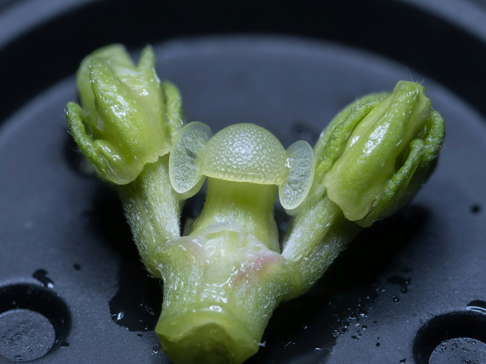
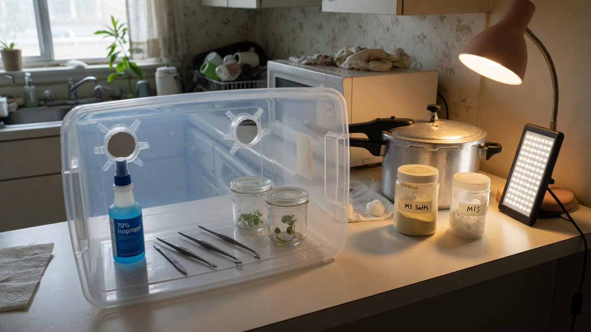
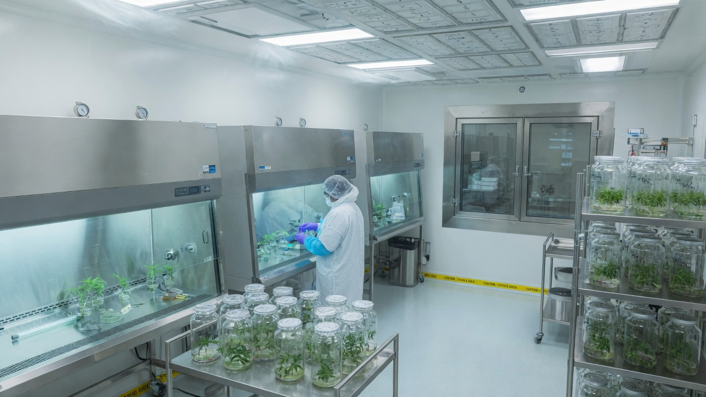
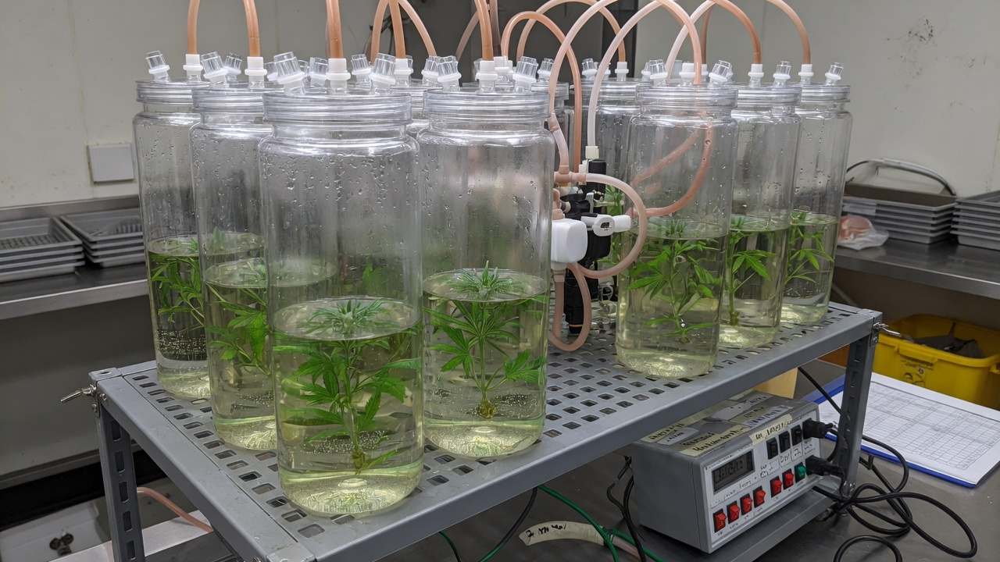
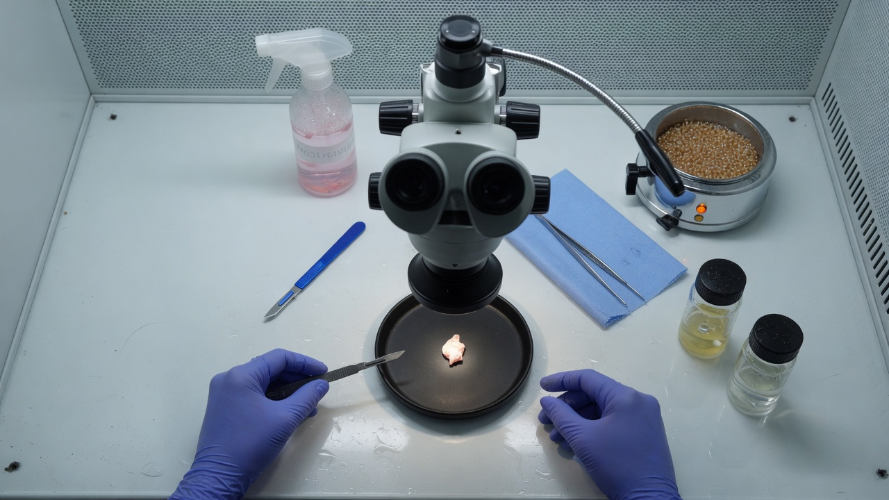

Cannabis tissue culture from start to end
This guide shows how to make a cannabis plant from a small piece of tissue in a sterilized jar. It gives the steps for a home bench and for a licensed facility. Each term has a definition. Each recipe has numbers. Read the sections in sequence.
Purpose and scope
The first time that you use this guide, read the sections in sequence. After that, go to the stage that you are in. The tissue culture SOP has the lists of tasks and the forms. You can print them.
This guide is for two setups. The first setup is a home bench with a plastic container and a pressure cooker. The second setup is a licensed facility for medicinal cannabis. It has a hood with filtered air and written records. The work on the plants is the same. The tests and the documentation are different.
You cut a small piece from a cannabis plant. You put the piece on a sterilized gel. The gel contains mineral salts and sugar. The gel can also contain plant hormones. In a sealed jar, the piece becomes a new plant. The new plant has the same genetics as the plant that you cut it from.
Definitions
The table contains all the terms of this guide.
| Term | Definition |
|---|---|
| Acclimatization / hardening | The procedure in which you decrease the humidity in steps. The plant from the jar then adapts to the air of the room and to soil. |
| Activated charcoal | A black powder in the gel. It removes the brown compounds that flow out of the cut surface. It can also remove hormones. |
| Agar / gellan / Phytagel | The material that makes the medium solid. When you add more agar, the gel is harder. A harder gel gives drier air in the jar. As a result, the plants have less glassy growth. |
| Aseptic technique | The procedure of work that prevents the contamination of the medium with microbes. |
| Autoclave | A device that keeps steam at 121 °C (250 °F) and 15 psi. At home, a pressure canner that holds 15 psi does the same task. |
| Auxin (IBA, NAA, IAA) | A type of hormone. It causes the tissue to make roots. |
| Callus | A mass of cells that have no special function. Callus frequently occurs as a side effect. In Holmes 2021, callus was not a good method of production for cannabis. |
| Cytokinin (mT, TDZ, BA) | A type of hormone. It causes the tissue to make shoots. |
| DKW | Driver and Kuniyuki Walnut salts. DKW is an alternative mineral mixture to MS. The result on cannabis is different for each cultivar. |
| Endophyte | A microbe in tissue that shows no sign of disease. Bleach on the surface cannot touch the microbe. |
| Explant | The piece of the plant that you put in the jar. |
| GACP / GMP | GACP is the standard for cultivation. GMP is the standard for manufacturing. Plants for the start of a crop are between the two. |
| HEPA / laminar-flow hood | A fan and a filter. They blow a sheet of clean air across the bench. A laminar-flow hood is not a biosafety cabinet. |
| HpLVd / HLVd | Hop latent viroid. It is the usual cause of “dudding”. It has 256 letters of RNA. |
| Hyperhydricity / vitrification | Glassy growth in the jar. The leaves contain too much water, are transparent and break easily. Frequently, the cause is too much cytokinin or too much humidity. |
| In vitro / ex vitro | In the jar / not in the jar. |
| Indexing | A test of a plant for a specified pathogen. Use “clean” for a plant only after this test. |
| Initiation (Stage I) | The procedure to get the first culture that makes new growth and has no contamination. |
| ISO 5 / ISO 7 | Ratings of how clean the air is. ISO 5 is the rating at the work surface of the hood. ISO 7 is the typical rating of the room around the hood. |
| Meristem | The dome of cells that divide at a shoot tip. At this stage, the dome has no sap tubes. |
| Meta-Topolin (mT) | A cytokinin that you can use to start cannabis cultures. If the quantity is too large, the Stage II plants have glassy growth. |
| Micropropagation | The procedure that uses tissue culture to make many plants that are the same. |
| MS salts | Murashige and Skoog, 1962. MS is the standard mineral mixture. The quantity of powder is 4.4 g (0.16 oz) for each liter. |
| Nodal segment | A stem piece with one bud. It is easy to use. Frequently, the contamination continues to be in the inner tissue. |
| PGR | Plant growth regulator. A hormone that you add to the medium. |
| Phenolics / browning | Brown compounds that flow out of the cut surface and cause stains in the gel. |
| Photoautotrophic micropropagation | A method with no sugar. It uses usual fertilizer and more air. The plants are almost the same as cuttings from a nursery. |
| PPM | Plant Preservative Mixture. It is an antimicrobial. You can sterilize it with the medium in an autoclave. |
| qPCR / RT-qPCR | A lab test to find the RNA of the viroid. “Not detected” is not the same as “cannot exist”. |
| Recalcitrant species | A species that is not easy to start in a jar. Cannabis is one. |
| Somaclonal variation | Changes in the genetics that occur after many subcultures in the jar. |
| Still-air box | A transparent plastic container with two arm holes. The air in the container does not move. Thus spores do not move to open jars. |
| Subculture | The procedure to move tissue to new medium. |
| Temporary immersion | The liquid medium makes the shoots wet at times that a timer sets. Then the medium drains. |
| TDZ (thidiazuron) | A very strong cytokinin. Use small doses. |
| Totipotency | A cell of a plant can make a new plant with all its parts. |
| Vascular tissue | Xylem (for water) and phloem (for sap). The viroid moves in the sap tubes. |
Evidence and limitations
We want each paper to be correct. Thus we examine each paper for information that is not solid. This information comes from the view of one grower, from a small number of sources, or from grower methods that have no controlled test. We identify this information, and we do not show it as solid.
Frequently there is no paper for the decision that you must make. Then we use the reports of other growers and the methods that work in the rooms that we know. This information can help you, but it is not the result of a laboratory test. Use the methods that work for your plants, for your room and for your meters. If a table does not agree with your crop, use the data from your crop and record the difference.
- The primary definitions and the units of measurement in the paper
- Safety limits that have a citation to a regulation or a specification
- Target ranges for light, climate and feed in each stage. They are start values that you can change.
- SOPs that work in many rooms, but you must adjust them for your genetics and meters
- A number for yield or potency that you will always get, with no test at many sites
- Controller setpoints from a different facility, with no new calibration
If you find an error, make a report. We will correct it. Make the report on GitHub, with the name of the paper and the information that is incorrect. If you have a source, include it: Make a report of an accuracy problem. The regulations, labels and licenses of your area always override each procedure in these papers. The label weak in a paper shows the points where the risk of an error is highest.
Tissue culture procedure
Each tissue culture batch has the same five stages. Cannabis has two more tasks. The first task is to cut the meristem. The disease then stays in the remaining tissue. The second task is a lab test. The test shows if the meristem cut removed the disease.
A plant with roots in a pot. The time is approximately 10–15 weeks. You do not know that the plant has no disease.
A mother plant with a negative test for Hop latent viroid. For this result, you do a meristem cut and a lab test. The time is 5–8 months. A kit that makes plants only in jars cannot give the second result.


When to use cannabis tissue culture
A usual cutting is a copy of the plant. It is also a copy of each pest, fungus and viroid that the plant has. Tissue culture can make a new plant from tissue that does not contain those organisms.
Hop latent viroid (HpLVd or HLVd) is a small loop of RNA. It is 256 letters long. It has no protein coat. It is in plant cells and moves in the sap.
In 2021, an industry report gave the results of approximately 200,000 tissue tests. The report shows that approximately 90% of the facilities in California had some infection. This figure is in frequent use.[5]
A report on licensed facilities in Canada gives the results of 15,947 samples from nine provinces. In total, 25.6% of the samples were positive. The rates were different for each province and for each year. They were from 5.3% to 92%.[6]
In plants with the infection, the height and the weight of the flowers were 12–42% less. The loss was different for each cultivar. No spray touches the viroid because the viroid is in the cells.
- Less space. A rack of jars holds many plants. The same number of mother plants fills a room.
- The same plant each time. Cannabis seed has mixed genetics. A crop of medicinal cannabis flower must have the same female chemotype in each cycle. Tissue culture makes copies of one plant.
- Plant health, not a new genotype. When you make cuttings from the same plants for many years, mutations and microbes increase.[9] When you start from a meristem, you get the same genetics with a smaller number of mutations and microbes. It does not change the DNA.
- Storage and shipping. It is easier to move a jar, or a frozen shoot tip, than a mother plant of 1.5 m (5 ft). It is also easier to make a backup of a jar or a frozen shoot tip.
This procedure does not change the cultivar. It removes the diseases and pests that the plant got. A plant with no disease can get the infection again from a dirty blade or from a tray that other plants use.
Shoot-tip anatomy
Viroids and viruses move in the sap tubes. The meristem is a dome of cells that divide, at the tip of a shoot. At this stage, those cells do not have sap tubes. They divide faster than the pathogen can move forward. If you cut only that dome, it is possible that the piece does not contain the disease.
These data show how frequently a meristem cut removes the viroid. Punja (2025) cut meristems with a width of 0.2–0.4 mm (0.008–0.016 in) from 91 plants with infection, of 8 cultivars. At six months, 40.7% of the plants had a negative test for Hop latent viroid. The range for the different cultivars was 0% to 100%.[6] A meristem cut is a filter. It cannot make sure that the plant has no viroid.


Meristem culture can make a plant with a negative test for the viroid. It does not make a plant that cannot get the infection again. The result “negative” is correct only after a lab test (section 16).
Home laboratory setup
You must have three items. The first item is an area with clean air that does not move. The second item is a device that sterilizes jars at 121 °C (250 °F). The third item is a warm shelf with light. A lab coat is not necessary. A hospital cabinet is not necessary.

Items to get
| Item | Items that you assemble (approximately $200–550) | Kit (Athena or Plant Cell Technology) |
|---|---|---|
| Clean air | A transparent storage container. Cut two arm holes in one side. Clean it with 70% alcohol. This item is a still-air box. | A small laminar-flow hood with a HEPA filter (Athena kits include one). |
| Sterilization of media | A stovetop pressure canner that holds 15 psi for 20 minutes. An Instant Pot does not hold 121 °C. | The Athena kit includes a small autoclave. |
| Medium | MS powder, table sugar, agar and optional hormones (mT, IBA). | SHOOTS and ROOTS sachets. Each sachet contains a mixture that the manufacturer made. The recipe is not available. |
| Added antimicrobial | PPM, 0.5–2 mL for each liter of medium. Optional. | The same, or “Cleanse” from the kit (hypochlorous acid). |
| Jars | Baby-food jars or Magenta vessels. Fill each jar to approximately one third. | Jars from the kit. Some of the jars have filter vents. |
| A test that shows that the plant has no disease | None at home. A lab can do a qPCR test. Use this test if you want to show that the plant has no disease. The test has a cost. | The kit has no test. A lab can do a qPCR test. The test has a cost. |
| The street price of the Athena kit was approximately $1,800–2,295. The Plant Cell Technology starter kit is a smaller package of ingredients and vessels. Prices change. | ||
A biosafety cabinet keeps dangerous microbes away from the person. In this procedure, you keep the microbes in the air of the kitchen away from the plant. A still-air box or a laminar-flow hood is the correct tool.
The laminar-flow hood
A fan pushes room air through a HEPA filter, and the filter removes more than 99% of the particles. Then the clean air blows in one sheet across the bench, to you or down. The direction is different for different hoods. Do the work in that sheet of air. Do not put objects in the sheet of air. Do not move your hands upstream of an open jar.
Shelf settings
| Setting | Target | Information |
|---|---|---|
| Temperature | 24–26 °C (75–79 °F) | Holmes used 25 ± 2 °C (77 ± 4 °F). The range 21–27 °C (70–81 °F) is also satisfactory. |
| Day length | 16–18 hours of light | The plants stay in vegetative growth. A light period of 12 hours will start the flowering stage. |
| Light level | Approximately 70–100 µmol m⁻² s⁻¹ at the jar | Holmes used 102. Kodym measured approximately 70 in the jar. |
| pH of the medium | 5.6–5.8 before you add agar and before you sterilize the medium | Holmes set the pH to 6.6. After sterilization in an autoclave, the pH was approximately 5.8. |
| Wait after you put the medium in the jars | 7 days before you use a new batch of jars | Microbes with a slow rate of growth show in that week. |
If you use alcohol and a flame to sterilize tools, keep the open alcohol far from the flame. A glass-bead sterilizer at approximately 250 °C (482 °F) for approximately 20 seconds is safer in a plastic container. Punja (2025) found that 70% ethanol does not break the RNA of Hop latent viroid. Household bleach at 5–10% of 8.25% sodium hypochlorite breaks the RNA in 1–2 minutes. 1000 ppm hypochlorous acid breaks the RNA in 1 minute. An Instant Pot is not an autoclave.
Layout of a laboratory in a licensed facility
A licensed lab does the same work on plants. It also keeps written records. It has a procedure for disease tests. It is not a larger still-air box in a kitchen.

Air ratings
ISO 5 and ISO 7 are particle counts. ISO 5 has a smaller number of particles than ISO 7. In a plant lab, ISO 5 is the rating at the work surface of the laminar-flow hood. ISO 7 is a typical rating for the room around the hood.
Plant tissue culture is not a hospital sterile-fill suite. It is not a biosafety Level 2 lab. You keep microbes from the kitchen out of the medium. The cultures do not contain human pathogens.
Information that inspectors want
The standard for medicinal cannabis flower is usually GACP (Good Agricultural and Collection Practice). The standard for a product from manufacturing can be GMP (Good Manufacturing Practice). The tissue culture lab is between the two.
An inspector will want two items of information. The first item is how you know that this plant is the cultivar on the label. The second item is how you know that it does not have Hop latent viroid. Give the results of a test to identify the cultivar and of a pathogen test. The bleach procedure is not sufficient.
- Air. Cut the pieces and put them on the medium in a laminar-flow hood. The room is usually ISO 7.
- Personnel. Put on a gown, a hair cover and gloves. Do not put on jewelry. Go in one direction, from dirty to clean. One person at one hood is one work unit.
- Lot numbers. Each autoclave load, each batch of medium and each period of cutting has a number for traceability.
- Quarantine. Mother plants that come into the facility stay in a quarantine room until you do a test of the plants. Discard a plant if its test result is unsatisfactory.
- Replace mother plants. Mutations increase when you cut the same in-vitro line again (Torkamaneh 2024). Start again from a backup with a negative test.

Get larger vessels after Stage I has no contamination. You must also have a recipe that gives good results for that cultivar. In Kodym and Leeb (2019), 97.5% of the shoots made roots and hardened in 3 weeks on rockwool with no sugar and no hormones. Do not get a bioreactor to correct a contamination rate of 60%.
Aseptic technique
Contamination causes most of the losses in a first batch. Contamination is almost always a problem of technique. It is not an accident.

- 1Clean the work areaClean the still-air box or the hood, and the bench, with 70% alcohol. Let the surfaces dry. If you use a still-air box, make sure that the fans and the air-conditioning are off.
- 2GlovesUse new nitrile gloves. Spray them with 70% alcohol. Spray them again each time you remove a hand from the work area.
- 3Put only necessary items in the areaPut in the area only the jars, the tools and the plant pieces for this work. Objects that you do not use collect dust.
- 4Sterilize the tools before you cutUse alcohol and then a flame, or use a glass-bead sterilizer at approximately 250 °C (482 °F) for approximately 20 seconds. Then let the tool become cool. A hot blade kills the plant tissue.
- 5Open the lid only when you use the jarGo to the jar from the side. Do not move your hands above an open jar.
- 6Wait seven days before you use a jarOn day 2, you can see that a jar is clean. In week 2, the same jar can have microbes that increase in number. Frequently, internal microbes show at this time.
Holmes (2021) used a full bleach protocol on stem pieces from mother plants of a commercial grower. After the protocol, approximately half of the pieces had fungi or bacteria. The microbes are in the pith. PPM at 2 mL/L stopped the microbes for 1–3 weeks, but it did not remove them. The meristems had less contamination. Thus section 11 gives the meristem procedure.
Make and sterilize the medium
The medium contains mineral salts, sugar, vitamins, optional hormones and agar. First set the pH. Then add the agar. Sterilize the medium last. The light in the sealed jar is too dim for the plant to photosynthesize sufficiently. Thus the sugar is the source of energy.
Basic recipe for 1 liter (initiation or multiplication)
| Ingredient | Quantity for each liter | Function |
|---|---|---|
| RO or distilled water | Start with approximately 800 mL (27 fl oz). Then add water to 1 L (0.26 gal). | The minerals in tap water change the recipe |
| MS basal salts | 4.4 g (0.16 oz) | The standard mineral mixture |
| Sucrose (table sugar) | 30 g (1.1 oz) | Energy |
| myo-Inositol | 0.1 g (0.004 oz) | Standard component |
| Activated charcoal | 1 g (0.04 oz), optional | Removes the brown compounds that flow out of the cut surface. Holmes used 1 g (0.04 oz)/L. |
| Agar | 6–8 g (0.21–0.28 oz). Use 9.5 g (0.34 oz) if the shoots have glassy growth. | Makes the medium solid. A harder gel gives less water in the leaves. |
| PPM (optional) | 0.5–2 mL | Decreases the rate of growth of some microbes. It does not replace aseptic technique. |
| pH | 5.6–5.8 before you add agar and before you sterilize the medium | Holmes set the pH to 6.6. After sterilization, the pH was approximately 5.8. |
Hormone quantities in reports on cannabis
| Stage | Hormone | Dose | Source |
|---|---|---|---|
| Start of the culture | TDZ + NAA | 1 µM + 0.5 µM | Lata 2009 / Holmes |
| Start of the culture, with a weaker hormone | meta-Topolin | 0.48 mg/L | Das 2024, from Lata 2016 |
| Long-term multiplication | None | MS plus more calcium | Das 2024 MM12. The medium gives less glassy growth. |
| More calcium | Calcium nitrate + calcium gluconate | 0.71 g (0.025 oz)/L + 1.35 g (0.048 oz)/L | Das 2024 |
| Roots in the jar | IBA | 2.5–5 µM (approximately 0.5–1 mg/L) | Holmes: 5 µM gave better results than 42 µM |
| Roots, optional | Sodium metasilicate | 6 mg/L | Holmes: better leaves, and 40% of the pieces made roots |
| Roots, optional | Silver nitrate | 40 µM with IBA | Holmes: more roots than with IBA only |
| Roots in a plug, not in gel | IBA dip | 15 mM for 2–4 minutes | Ioannidis 2022, a maximum of approximately 100% rooting |
MS is Murashige and Skoog salts, the standard mixture. DKW is Driver and Kuniyuki Walnut salts, a different mineral mixture.
Page (2021) found that DKW gave plants in better condition than MS on some cultivars. Holmes found the opposite on two cultivars. In Das (2024), the DKW cultures became brown and died. Use MS until you get good results. Then try DKW in one test.
- 1Mix the salts and the sugarUse approximately 800 mL of RO or distilled water. Mix until the powder is in solution. Add the vitamins, the charcoal and the PPM if you use them.
- 2Set pHSet the pH to 5.6–5.8 before you add agar. A drop of acid solution with a low concentration decreases the pH. A drop of alkaline solution with a low concentration increases the pH.
- 3Add agar and make the medium hot until the agar is in solutionPut the medium in the jars. Fill each jar to approximately one third.
- 4Sterilize with heatSterilize at 121 °C (250 °F) and 15 psi for 20 minutes. In a pressure cooker, use the same numbers. Put the jars on a rack. The jars must not be in a large quantity of water.
- 5Let the jars become coolYou can put the jars at an angle while they become cool. Then it is easier to put the explant on the surface of the gel. Keep the new jars for 7 days. If they stay transparent and have no contamination, use them.
Surface sterilization of the explant
Surface sterilization kills microbes on the outer surface of the plant. It cannot touch microbes that are in the stem. Use a time that is sufficient to kill the microbes on the surface. A time that is too long kills the plant tissue.
Procedure for stem pieces and shoot tips from a mother plant
- 1Prepare the mother plant (Stage 0)Keep the mother plant in vegetative growth, and monitor it for pests. Use a new plant in a substrate that is clean. Holmes found that plants in coco that were not new were dirtier. On one cultivar, a systemic fungicide (fluopyram, Luna) decreased the contamination from 88% to 32%. We do not recommend that you apply the fungicide to all plants. This result shows that the condition of the mother plant is important.
- 2Cut in the morningCut shoot tips or stem pieces. Each piece must be 10–15 mm (0.4–0.6 in) long. Remove the large leaves. Keep the pieces wet and cool.
- 3Clean with soap and waterUse tap water that flows, with a drop of dish soap or Tween-20. Do this for 10–20 minutes. The soap loosens the film that holds the microbes.
- 470% ethanolKeep the pieces in the ethanol for 30–60 seconds. A longer time causes damage to cannabis tissue.
- 5BleachHolmes used 10% household bleach (approximately 0.625% sodium hypochlorite) with 0.1% Tween-20 for 20 minutes. Mix the solution during this time. In Das (2024), 1% sodium hypochlorite for 30 minutes gave 55% of pieces that you can use. A time of 10 minutes gave 100% dirty pieces. A time of 60 minutes killed 100% of the pieces.
- 6Clean three times with sterilized waterKeep the pieces in sterilized water for 3–5 minutes each time. Then, in the hood, remove the ends that the bleach touched. Put the piece on the gel.
| Source | Sodium hypochlorite | Time | Notes |
|---|---|---|---|
| Holmes 2021 | 0.625% (10% household bleach) | 20 min | With 1 minute of 70% ethanol. Approximately half of the stem pieces had contamination after this treatment. |
| Das 2024 | 1% | 30 min | The best rate of pieces that you can use in that test. Carbendazim caused more plants to die. |
| Kodym 2019 | 0.5% | 20 min | Then clean three times with sterilized water, 10 minutes each time. |
| General blog of Plant Cell Technology | 10–20% bleach | 10–20 min | The blog is not for cannabis. Start with a weaker bleach solution. |
| Plant Cell Technology, calcium hypochlorite | 3.25% | Not specified | It causes less damage than sodium hypochlorite on some tissues. |
The label of Plant Cell Technology gives 0.05–0.2% (0.5–2 mL/L) in the medium. The rate is for usual microbes in the air and in water. You can sterilize the PPM with the medium in an autoclave.
For microbes that are in the plant, the label gives a different procedure. Shake the pieces for 4–12 hours in 4–5% PPM with MS salts at three times the strength. Then put the pieces on a medium with 0.05–0.2% PPM.
In the tests of Holmes, 2 mL/L stopped the contaminants for 1–3 weeks. Then the contaminants showed. PPM gives more protection. It does not replace a meristem cut.
Stage I: start of the first culture
Use one plant piece in each jar. The task for this month is a culture that has no contamination and makes new growth. The task is not a tray of plants.
Holmes made shoots from meristems and from stem pieces. The medium was MS with 1 µM TDZ, 0.5 µM NAA and 1 g/L charcoal. The meristems were slower (the measurement was at 10 weeks) and had less contamination. The stem pieces were faster (the measurement was at 6 weeks) and were dirtier.
The result was different for each cultivar. The average length for Moby Dick meristems was 4.5 cm. The growth of Space Queen was low.[1]
Das (2024) got the best start on MS with 0.48 mg/L meta-Topolin. Shoot tips of less than 5 mm had less contamination than full shoot tips or stem pieces. They also had less glassy growth than bare meristems.[4]
- 1Put the piece in the mediumPut the piece in the gel. The cut bottom end must be in the gel and the bud must be above the gel. Use one piece for each jar until you know the rate of good results.
- 2Close the jar and put a label on itWrite the cultivar, the date, the medium and the type of piece on the label. Put the lid on the jar immediately.
- 3ShelfUse 24–26 °C (75–79 °F), 16–18 hours of light and approximately 100 µmol. Do not open the jar each day to examine the culture.
- 4Discard defective jars quicklyIf the gel has a cloud, mold or an unusual odor, seal the jar in a bag. Put the bag in a bin. Do not open the jar in the clean hood.
- 5Move the good culturesAt 3–4 weeks, move the clean growth to new medium. Das found that Stage I recipes gave glassy growth after 2–3 moves. Change to the Stage II recipe in section 12.
A jar that you can see is clean on day 7 can have microbes in week 3. Do not cut new pieces from a culture in the first week.
Meristem dissection to remove pathogens
With the meristem cut, it is most possible that the piece does not contain Hop latent viroid. You must have a stereo microscope. First, do stem-piece cultures for two months. In this time, your aseptic technique becomes correct.
Prepare the bench first

Tools

Hands

The eight movements

Do the steps in this sequence
- 1Start with new growthIn the morning, cut a tip of 10–15 mm (0.4–0.6 in) from a vegetative shoot. Remove the large leaves before you go to the hood. Use new growth. Reports show heat treatments of the mother plant. The rate of removal of the viroid is from 0% to 94% for the different cultivars. Do not use a temperature from a blog.
- 2Sterilize the toolsUse the glass-bead sterilizer at approximately 250 °C (482 °F) for 20 seconds. Then let the tools become cool. Or use alcohol and then a flame, and then let the tools become cool. A hot blade kills the dome.
- 3Dish at the microscopePut one drop of sterilized water on the black dish. Put one tip on the drop. First, adjust the microscope at 10–20×. Then go to 30–40×.
- 4Left forceps, 3–5 mm (0.1–0.2 in) down the stemPoint the tip up. Put the wrist on the bench. Do not apply force to the dome.
- 5Remove the outer leaves with the #11 bladeHold the blade almost flat. Move the blade below the leaf. Move the leaf away. Sterilize the blade again after you remove some leaves.
- 6Stop at two small leavesHolmes kept two leaf primordia as a protection from the bleach. At this stage, you can see a pale dome. If you see only green, continue to remove leaves.
- 7Sterilize the surface of that small tipUse the same bleach sequence as in section 09, but use a shorter time if the tissue is pale. Then clean the tip in sterilized water.
- 8One nick below the domeThe piece is 0.2–0.4 mm (0.008–0.016 in). Cut one time. Do not cut many times. Lift the piece with forceps or a sterilized needle.
- 9Put it on the gelPut the cut bottom end in the gel. Put the lid on the jar immediately. Write the cultivar, the date and “meristem” on the label. The piece becomes a plant in 4–8 weeks. Holmes used MS + 1 µM TDZ + 0.5 µM NAA + 1 g (0.04 oz)/L charcoal.
- 10Then test itSection 16 gives the procedure for the test. One negative test on a plantlet of 1 cm (0.4 in) is a start. Do a test again after the plantlet makes new leaves. Approximately 41% of the plants have a negative test at six months, and not 100%.
A stem-piece culture does not remove pathogens that are in the plant. If you did not send a sample to a lab, you made a clone in a jar.
Stage II: multiplication of shoots
The task of this stage is to get more shoots from one clean culture. Cannabis frequently gives better results as one primary shoot in good condition that you cut again. It gives worse results as a group of leaves with glassy growth that hormones cause.
Das (2024) did not add meta-Topolin in Stage II because 0.5 mg/L increased glassy growth. The best medium in that test was MS with no hormone, more calcium nitrate, more calcium gluconate and 9.5 g (0.34 oz)/L agar. Shoot tips gave better results than stem pieces. For eight cultivars, the number of new pieces that you can use from each plant was from 1 to 6.[4]
Lata (2016) used meta-Topolin to make many shoots at the same time. This method gives good results. If you keep the plants on meta-Topolin for months, the plants have glassy growth. Use meta-Topolin to increase the number of shoots. Then move the line to the Stage II medium with less hormone.
- 1CutUse a clean Stage I plant. Cut a shoot tip of 15–25 mm (0.6–1.0 in), or a stem piece with a bud that you can see.
- 2New jarUse the same medium or the Stage II medium with less hormone. Do not use a jar again.
- 3Number of pieces for each jarHome: 1–3 pieces. Facility: as many pieces as your contamination rate lets you use.
- 4TimeThe time is 3–4 weeks. If the growth stops, do a check of the pH and of the charcoal (it can remove hormones). It is also possible that this cultivar does not give good results on the medium.
Torkamaneh (2024) shows that, in cannabis from tissue culture, mutations increase when you cut the line again more times.[9] Do not operate production for years from one in-vitro generation. Start again from a mother plant with a negative test.
Stage III: rooting
A shoot with no roots is not a plant that you can put in a pot. Rooting is a different step.
Four methods from reports
| Method | Procedure | Result from reports | Source |
|---|---|---|---|
| IBA in the gel | Half-strength or full-strength MS, 5 µM IBA, 4 weeks | 83% of the pieces made roots at 5 µM, compared with 44% on the shoot medium. 42 µM gave worse results. | Holmes 2021 |
| Silicate or silver | Sodium metasilicate 6 mg/L, or silver nitrate 40 µM with IBA | Better leaf shape. More roots. | Holmes 2021 |
| IBA dip, then a plug | Put the cut bottom end in 15 mM IBA for 2–4 minutes. Then put the piece in a peat sponge or in rockwool. | A maximum of 100% rooting. The establishment in the field was approximately 95%. | Ioannidis 2022 |
| No sugar, more air | Rockwool, usual cannabis fertilizer, jars with vents, no sugar, no hormones | 97.5% made roots and hardened in 3 weeks. The survival in the glasshouse was 100%. | Kodym and Leeb 2019 |
You can remove a shoot from the jar and put it in a plug with rooting hormone. This procedure is the same as for a usual cutting. It is not necessary to make the roots in the gel.[8]
- 1Select a shootThe shoot must be 2–4 cm (0.8–1.6 in) long. It must not have glassy growth. It must not have browning.
- 2Select a methodHome: use IBA in the gel, or do an IBA dip and put the shoot in a sterilized plug. Facility: do an IBA dip and put the shoot in a plug. Or use the no-sugar method with jars with vents.
- 3WaitRoots show in 2–4 weeks. If there are no roots at week 5, cut the bottom end again and use less IBA. More hormone does not always give better results.
- 4Move itIf the roots are in gel, remove the gel from the roots with sterilized water. If the roots are in a peat sponge or a cube, put that item in the substrate.
Stage IV: movement of the plant out of the jar
In the jar, the humidity of the air is almost 100%. The surface of the leaves is thin, with no layer of wax. If you move the plant directly to the air of the bench, the water in the leaves decreases faster than the roots can supply it. Hardening (acclimatization) is the procedure to decrease the humidity gradually. Then the leaf has time to make a protective layer on its surface while it has moisture.
| Plug or cube | Survival in Holmes (cultivar Moby Dick) | Notes |
|---|---|---|
| Rockwool cubes | 83% | The plants were the strongest |
| Peat plugs | 76% | Das (2024): in coco plugs, the survival was 16 of 18 plants (90%) |
| Hydro cloner | 57% | This method is satisfactory. It has the smallest tolerance for errors. |
- 1Soak the plug firstUse a weak nutrient solution for vegetative growth, at approximately pH 5.8. Use rockwool or coco. Do not use heavy soil for pots.
- 2Put on the domeSpray water on the walls of the dome and not on the tops of the plants. Use 16 hours of light, with a low light intensity, at 24 °C (75 °F).
- 3Open the ventsDay 7: open the vents to half. Day 9: open the vents fully. Day 14: remove the lid. Kodym: put the lids on the jars with the top of each lid down, for 3 days. Then remove the lids for 2 days, in low light.
- 4Then use the same procedure as for a new cloneDo not change it to 12 hours of light for some weeks.
A plant that made roots on rockwool with no sugar has a thicker leaf surface and good roots. The time for hardening is a small number of days and not two weeks.
Symptoms of a defective culture
Most problems are one of four types. Compare the jar with the photos. Change one variable. Do the batch again.


| Symptom | Name | Correction |
|---|---|---|
| Cloud in the gel, slime, unusual odor | Bacteria, frequently from the inner tissue of the stem | Put the jar in a bin. In the next batch: use a new mother plant, a meristem or a small shoot tip, and an optional treatment with PPM. Do the work more slowly. |
| White, green or black mold | Fungi | Put the jar in a bin. Holmes found these in the pith. Change the substrate of the mother plant. |
| Brown ring, tan plant piece | Phenolics (browning) | Charcoal, move after a shorter time, 48 hours in darkness, antioxidant dip. |
| Transparent leaves that are wet and break easily | Hyperhydricity | Less cytokinin, 9.5 g/L agar, a lid with a vent, the Stage II medium of Das with no hormone. |
| No growth, pale, no roots | Cultivar that is not compatible with the medium, or expired medium | Try 5 µM IBA or 6 mg/L silicate. Or try DKW one time. |
| The jar is in good condition for 18 days. Then microbes show. | Internal microbes (endophytes) | Frequent in cannabis. Cut a meristem, or accept some losses. |
In Das (2024), 45–95% of the first pieces were defective. The result was different for each cultivar. One hemp line kept approximately 75% of the pieces. In Holmes, a maximum of half of the stem pieces had contamination. A result of 40% of the pieces of a new cultivar with growth and no contamination is good for the first week.
Tests for pathogens in stock plants
A meristem plant without a test is a clone. Licensed facilities send a test report with the plants. If you do not do the tests in this section, do not use the term “clean” for the plant.
qPCR (and RT-qPCR) is a lab test to find the RNA of the viroid. “Not detected” shows that the test did not find the RNA in that sample. It does not show that the plant cannot get the viroid after the test. It also does not show that the test finds a low quantity of viroid.
| Pathogen | Type | Removal with tissue culture | Test method |
|---|---|---|---|
| Hop latent viroid (HpLVd) | Viroid, 256-letter RNA | Punja 2025: 40.7% negative at 6 months (0–100% for different cultivars) | RT-qPCR. Roots are the most accurate sample. |
| Other viroids | Viroid | Same method. Less data for cannabis. | RT-qPCR panel |
| Lettuce chlorosis, CMV, AMV | Virus | Frequently, if you cut a meristem. Do a test to make sure. | RT-qPCR or ELISA |
| Fusarium and Penicillium in the stem | Fungus in the pith | A meristem usually removes it. Stem pieces usually do not. | Culture plus DNA test |
| Broad mites, russet mites, powdery mildew | Surface pests or surface fungus | Yes. These organisms die in a sealed jar. | Monitor the mother plant. Tissue culture is optional. It is not necessary. |
| Hop latent viroid in seed | The viroid goes from the parent to the seed | Cut a meristem from the seedling. Then do a test. | Reports show seed transmission. Think that the seed of a parent with infection has the infection until you do a test. |
- 1Select the correct tissue for the sampleUse a new leaf of full size, or the leaf stalk. The plant must make new growth after the meristem cut. A meristem of 5 mm (0.2 in) does not have sufficient tissue for a test.
- 2Use a lab that does cannabis tests for Hop latent viroidUse a plant health lab or a cannabis diagnostic lab. Strip tests for home use only give a first check. They are not release tests.
- 3Do a test againDo the test after 3–4 weeks in the nursery. Do it again before you use a mother plant for production. The quantity of viroid is not the same in all parts of the plant. This difference can cause a false negative.
- 4Keep a backup sampleFreeze tissue from each lot with a negative test. If a flower room shows “dudding” at a subsequent time, you can do a test of the backup sample. Then you know if the liner was positive at the start.
Hop latent viroid stays on tools, hands, pots and benches. It stays for approximately one week in sap and approximately one month in dry tissue. It can move to the seed.[6]
Use dedicated blades. Disinfect with 5–10% household bleach or 1000 ppm hypochlorous acid. Do not use 70% alcohol. Do not use the same tray for different plants.
Plant Preservative Mixture (PPM) and commercial kits
PPM (Plant Preservative Mixture) is the antimicrobial that most forums for cannabis tissue culture refer to. The rates in this section are from the label. They are not estimates from forums.
| Task | Plant Cell Technology label | Result of Holmes on cannabis |
|---|---|---|
| In the medium, for usual work | 0.05–0.2% (0.5–2 mL/L). Sterilize it with the medium in an autoclave. | 2 mL/L stopped microbes for 1–3 weeks |
| Work with callus | 0.05–0.075% | This guide does not give a procedure for this task |
| Microbes in the plant | 4–12 hours in 4–5% PPM with MS salts at three times the strength. Then put the pieces on a medium with 0.05–0.2% PPM. | When the pieces stayed 4 hours in 5% PPM, the result was not better than bleach on one cultivar |
| Woody plants with a large quantity of microbes | Put the pieces on a medium with 0.2% | Cannabis does not have woody tissue. Start at 1–2 mL/L |
- The cannabis articles of Plant Cell Technology refer to Lata 2016, Monthony 2021 and Ioannidis 2022. Those papers are the correct sources. The articles do not give a full recipe for cannabis.
- Their article about plants with no disease is correct on one point: use meristems for pathogens in the plant. Use stem pieces for surface pests and to make more plants.
- Their article about a home lab includes a recipe of fertilizer and vitamin tablets. The recipe is for houseplants. Do not use that recipe for cannabis. Use Table 3.
- BioCoupler / BioTilt is a small temporary-immersion bottle. Use it after the contamination is low.
- The Athena Culture Kit includes a laminar-flow hood, a small autoclave and SHOOTS and ROOTS mixtures that the manufacturer made. It is easy to use. The recipe is not available. Thus you cannot adjust the hormone when a cultivar has glassy growth. The kit does not include a disease test.
Tissue culture operations for each week
The number of plants that you send is your contamination rate multiplied by the hours at the hood. Correct the contamination rate before you get more personnel.
| Day | Home bench | Licensed lab |
|---|---|---|
| Monday | Clean the still-air box. Put the medium that you sterilized on Sunday in the jars. | Media kitchen: lot number, pH log and the record from the autoclave. |
| Tuesday | Start 10–20 stem pieces of one cultivar. | Start cultures only from mother plants that are in quarantine and have a test result. |
| Wednesday | Move the clean jars of the last month to new medium. | Two persons, two hoods, one cultivar for each hood in each work period. |
| Thursday | Examine each jar. Discard each jar that you are not sure about. | Walk through the grow room. Remove plants that are not the cultivar. Record each lot with a photo. |
| Friday | Make roots on the largest clean shoots, or do an IBA dip and put them in plugs. | Send the qPCR samples of the week. Put the plants with a positive test in quarantine. Release the plants with a negative test to the nursery. |
| Saturday–Sunday | Do not open jars to examine them. | Personnel come to the lab only for alarms of the air-handling system and of the incubator. |
- Use a value of approximately 80–100 transfers for each person in each hour at a hood. Sluis and Plant Cell Technology use this training figure. Do not use 1,500–2,000 transfers each day to calculate the number of personnel. That number is from sales and is too high.
- Ioannidis (2022): 500–600 plants with roots for each square meter of shelf, cycle of 3–4 weeks, peat sponges.
- Do a test of the production mother plants at intervals of 3–6 weeks. A meristem plant does not have a certificate for the full life of the plant.
- Reports give some data on costs. When a line is clean, the cost is approximately USD 0.50–1 for each liner. The first removal of disease from a dirty cultivar is approximately USD 2,000–5,000. The total cost of a lab is different for each site. Do not use “$50,000” from a blog as a value for your cost.
- Kodym kept stock plants for a minimum of 6 months in jars of 1.5–2 L (0.4–0.5 gal) with vents, with tipping many times.
- Mutations increase with the number of subcultures. Start a production line again after a maximum of approximately five cycles, from a backup with a negative test. Keep a backup that is frozen or has slow growth (Uchendu 2019 droplet-vitrification).
Keep a small block of mother plants with a negative test. Use them for new cuttings and for tests of the cannabinoid content. Use tissue culture to replace the plants of that block. Use it also to make the plants that you send to the flower room.
A lab that discards all mother plants and has cultures only on agar will have drift. The lab will not see the drift until the flowering stage. A facility that does not use tissue culture will, after some time, have Hop latent viroid in the clone line.
Troubleshooting
| Symptom | Possible cause | Change only this item |
|---|---|---|
| More than 50% of the jars are dirty at day 7 | Technique or a dirty mother plant | Do the work more slowly. Use a new plant. Use a smaller shoot tip or a meristem. |
| More than 50% dirty after day 14 | Microbes in the stem | Use a meristem. Optional: keep the pieces for 4–12 hours in 4–5% PPM. Change the substrate of the mother plant. |
| Pieces become brown in 48 hours | Browning with damage from bleach | Use a shorter bleach time. Add charcoal. Cut the ends. Keep the pieces 48 hours in darkness. |
| Shoots with glassy growth | Too much cytokinin or too much water | Use no hormone in Stage II. Use 9.5 g (0.34 oz)/L agar. Use a lid with a vent. |
| No shoots on a new cultivar | That cultivar does not give good results on this medium | Try MS + 0.48 mg/L meta-Topolin, or the TDZ+NAA mixture of Holmes. Then try DKW one time. |
| Shoots, no roots | Incorrect auxin quantity | Use 5 µM IBA, or a dip of 15 mM for 2–4 minutes, or the no-sugar method. |
| The plant makes roots, then dies in the dome | The humidity decreased too quickly | Use a longer stage with the vents half open. Use rockwool and not a hydro cloner. |
| The plant has no symptoms, then shows “dudding” in flower | You did not do a test | Section 16. |
Record the date, the cultivar and the type of piece that you cut. Record the bleach strength, the bleach time and the medium. Record the number of pieces on the medium. Record the number that are clean at day 7 and at day 21. Record the number that made roots. These data are more important than a second hood.
Sources of data and methods for photos
The basic paper on this site is a shorter guide for a new operator. It gives the same procedure for disease removal.[22]
The recipes and the survival numbers are from these papers. The papers are Holmes 2021, Das 2024, Kodym and Leeb 2019, Ioannidis 2022, Lata 2009 and 2016, and Punja 2025. We read these papers in full where they are open.
We used the pages of Plant Cell Technology for the label rates of products and for the papers that they refer to. These pages do not replace those papers.
The photos are illustrations that software made of the objects in this paper. They are not microscope slides from a lab. The diagrams agree with the anatomy of the shoot tip and of the stem from reports. One illustration of a stem cross-section showed a succulent plant and not cannabis. We discarded it and replaced it with Figure 6.
Tissue culture does not change the law. Make cannabis plants only where you have a license or where the law lets you do it. This guide is about horticulture. It is not a legal document.
References
- Holmes JE et al. (2021). Variables affecting shoot growth and plantlet recovery in tissue cultures of drug-type Cannabis sativa L. Frontiers in Plant Science, 12:732344. https://pmc.ncbi.nlm.nih.gov/articles/PMC8491305/
- Lata H, Chandra S, Khan IA, ElSohly MA (2009). Thidiazuron-induced high-frequency direct shoot organogenesis of Cannabis sativa L. In Vitro Cell. Dev. Biol.-Plant 45:12–19. https://doi.org/10.1007/s11627-008-9167-5
- Lata H, Chandra S, Techen N, Khan IA, ElSohly MA (2016). In vitro mass propagation of Cannabis sativa L.: a protocol refinement using novel aromatic cytokinin meta-topolin. J. Appl. Res. Med. Aromat. Plants 3:18–26. https://doi.org/10.1016/j.jarmap.2015.12.001
- Das R, Kretzschmar T, Mieog JC (2024). Importance of media composition and explant type in Cannabis sativa tissue culture. Plants 13(18):2544. https://doi.org/10.3390/plants13182544
- Atallah OO et al. (2023). Hop latent viroid: a hidden threat to the cannabis industry. Viruses / PMC. https://pmc.ncbi.nlm.nih.gov/articles/PMC10053334/
- Transmission, spread, longevity and management of hop latent viroid in cannabis in North America (2025). PMC. https://pmc.ncbi.nlm.nih.gov/articles/PMC11902214/
- Kodym A, Leeb CJ (2019). Back to the roots: protocol for the photoautotrophic micropropagation of medicinal Cannabis. Plant Cell Tiss. Organ Cult. 138:399–402. https://doi.org/10.1007/s11240-019-01635-1
- Kurtz LE et al. (2022). Ex vitro rooting of Cannabis sativa microcuttings and their performance compared to retip and stem cuttings. HortScience, 57(12):1576. https://journals.ashs.org/hortsci/view/journals/hortsci/57/12/article-p1576.xml
- Torkamaneh D et al. (2024). Somatic mutation accumulation in micropropagated cannabis is proportional to the number of subcultures. Plants, 13(14):1910. https://pmc.ncbi.nlm.nih.gov/articles/PMC11279941/
- Ioannidis K, Tomprou I, Mitsis V (2022). An alternative in vitro propagation protocol of Cannabis sativa L. presenting efficient rooting, for commercial production. Plants 11(10):1333. https://doi.org/10.3390/plants11101333
- Monthony AS, Page SR, Hesami M, Jones AMP (2021). The past, present and future of Cannabis sativa tissue culture. Plants 10:185. https://doi.org/10.3390/plants10010185
- Page SRG, Monthony AS, Jones AMP (2021). DKW basal salts improve micropropagation and callogenesis compared with MS basal salts in multiple commercial cultivars of Cannabis sativa. Botany 99:269–279. https://doi.org/10.1139/cjb-2020-0179
- Cryopreservation of shoot tips of elite cultivars of Cannabis sativa L. by droplet vitrification (2019). Medical Cannabis and Cannabinoids (Karger). https://pmc.ncbi.nlm.nih.gov/articles/PMC8489323/
- A temporary immersion system to improve Cannabis sativa micropropagation (2022). Frontiers in Plant Science. https://www.frontiersin.org/articles/10.3389/fpls.2022.895971/full
- Plant Cell Technology (2023–2024). How to tissue culture cannabis; Achieving disease-free cannabis stocks; How to sterilize your explants; Build a home tissue culture lab; PPM™ directions for use. (source not from a journal, for example from a manufacturer) https://plantcelltechnology.com/
- Plant Cell Technology. Plant Preservative Mixture (PPM™) product directions: 0.05–0.2% standard; 4–5% soak for endogenous load. (source not from a journal, for example from a manufacturer) https://plantcelltechnology.com/products/plant-preservative-mixture-ppm
- Athena Ag, Culture Kit, ROOTS/SHOOTS media, and Plant/Media/Lab Prep procedure (manufacturer documentation). (source not from a journal, for example from a manufacturer) https://www.athenaag.com/culture-kit
- Murashige T, Skoog F (1962). A revised medium for rapid growth and bio assays with tobacco tissue cultures. Physiol. Plant. 15:473–497. https://doi.org/10.1111/j.1399-3054.1962.tb08052.x
- Driver JA, Kuniyuki AH (1984). In vitro propagation of Paradox walnut rootstock. HortScience 19:507–509. https://doi.org/10.21273/HORTSCI.19.4.507
- Lubell-Brand JD, Kurtz LE, Brand MH (2021). An in vitro–ex vitro micropropagation system for hemp. HortTechnology 31:199–207. https://doi.org/10.21273/HORTTECH04779-20
- Punja ZK, Collyer D, Scott C, Lung S, Holmes J, Sutton D (2019). Pathogens and molds affecting production and quality of Cannabis sativa L. Front. Plant Sci. 10:1120. https://pmc.ncbi.nlm.nih.gov/articles/PMC6811654/
- The Cannabis White Papers (2026). Cleaning up cannabis genetics with tissue culture (beginner paper). (source not from a journal, for example from a manufacturer) https://www.growlabs.nz/wiki/tissue-culture.html
Each citation in the paper, for example [1], refers to an item in this list. Each item is a primary source or an instruction from an authority, unless the item shows a different type. The results of cannabis tissue culture change much with the genotype. Before you use the dilutions, hormone doses and local regulations, make sure that they agree with the primary sources.